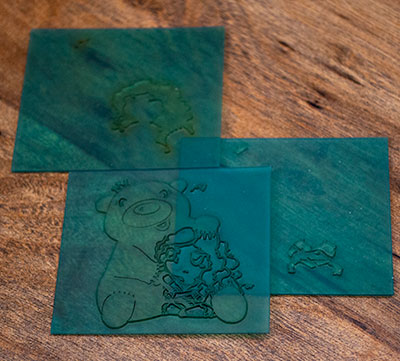
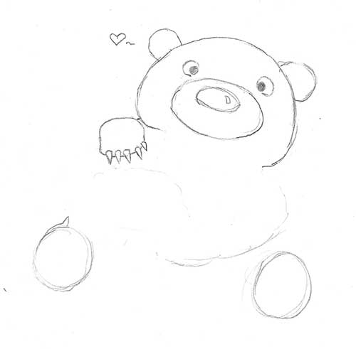
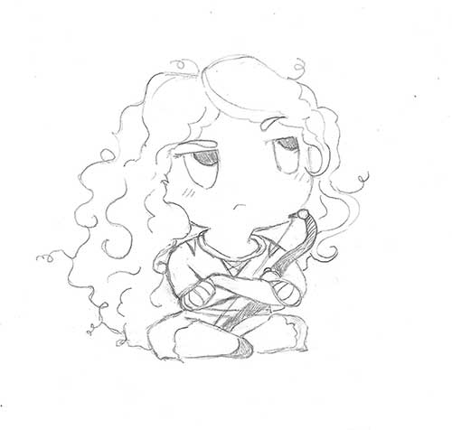

Brave Stickers
Print/ Sticker Design & Production
Illustrator, esko automation workstation
For my flexographic printing class, I designed stickers based on the Disney Pixar Movie Brave. The sticker features Merida and her mother Elinor (in bear form). The illustrations were hand drawn with pen and paper, then scanned into Adobe Illustrator. For the project, we could only use three colors so black, orange, and teal were chosen. After the file was prepped, I trapped the file and made sure that it met FIRST (Flexographic Image Specifications and Tolerances). From there, I helped to set up and run a flexographic press to produce a stack of my designed stickers.

Sketches

